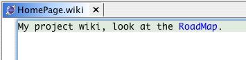
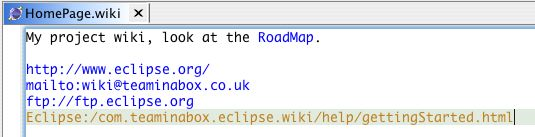

Enable Commands
The first thing you need to do is enable the Wiki accelerator keys as follows:
- Open the perspective you will use Wiki documents in
- Open the Window menu and select Customize Perspective...
- Select the Commands tab
- Check the Wiki command group
- Click Ok
Getting Started
The simplest way to start your wiki is to create a folder in your project and create a new file called HomePage.wiki.
The file could be called anything but it should be a Wiki Word
so other documents can link to it. Note the Wiki words can also be suffixed with a number which can be useful: WikiWord123 for example.
If you want to create a wiki link in a document, just type the wiki word and the editor will highlight the word. To visit the document
place your cursor on the wiki word and press F3. If the document doesn't exist, a new one will be created with the extension wiki.
Here is an example with a link to RoadMap.

Links
Apart from links formed by wiki words, links are automatically formed for:
- URLs
- Local eclipse resources beginning with Eclipse: followed by a path relative to the eclipse workspace. You can also
append a line number to make the editor open at the indicated line:
Eclipse:/foo/bar:12
- Wiki documentation in plugins with Plugin: followed by a path relative to the plugin:
Plugin:/foo/bar
If the plugin is in the workspace, the workspace folder is used, if the plugin is not in the workspace,
the installed plugin-folder is used. In the latter case, the Wiki file is copied to a local project (wiki_temp)
and accessed by the Wiki editor (read only).
- Fully qualified Java types in the current project

See also WikiSpace